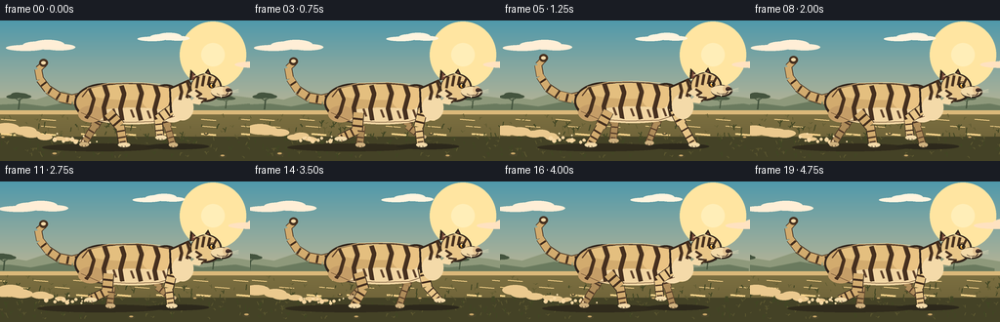
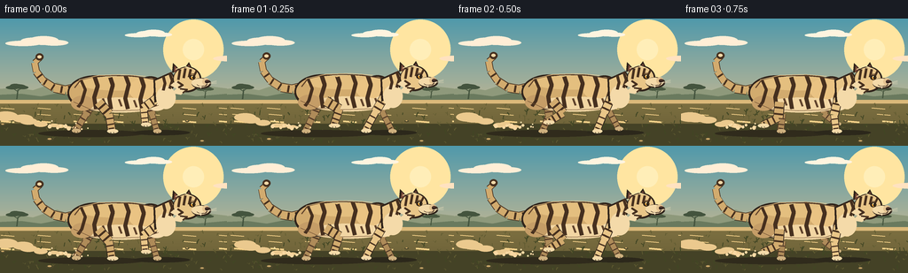

CODING AGENTS AS PIXEL WORLD MODELS
traex/DeepSeek-V4.1-Flash · instance_preservation_0007
点击播放 · 原生 RGB 像素
逐轮保存的候选
回放视频、检查图与代码变化。
每份候选均可单独播放。实际图片检查记录在下方工具轨迹中。
候选 01播放与检查图
点击播放 · 原生 RGB 像素


展开代码变化
--- 上一保存版本
+++ 本次保存版本
@@ -0,0 +1,592 @@
+"""Procedural renderer for a short savanna scene: a beige tiger running."""
+
+from __future__ import annotations
+
+import math
+import random
+from pathlib import Path
+
+import numpy as np
+from PIL import Image, ImageChops, ImageDraw, ImageFilter
+
+from artifact_io import save
+
+
+WIDTH = 256
+HEIGHT = 144
+FRAMES = 20
+FPS = 4.0
+SS = 4 # Supersampling factor.
+W = WIDTH * SS
+H = HEIGHT * SS
+
+TAU = math.tau
+
+
+def pt(point: tuple[float, float]) -> tuple[int, int]:
+ return round(point[0] * SS), round(point[1] * SS)
+
+
+def points(values: list[tuple[float, float]]) -> list[tuple[int, int]]:
+ return [pt(value) for value in values]
+
+
+def bbox(box: tuple[float, float, float, float]) -> tuple[int, int, int, int]:
+ return tuple(round(value * SS) for value in box) # type: ignore[return-value]
+
+
+def rgba(color: tuple[int, int, int], alpha: int = 255) -> tuple[int, int, int, int]:
+ return color[0], color[1], color[2], alpha
+
+
+def mix(a: tuple[int, int, int], b: tuple[int, int, int], t: float) -> tuple[int, int, int]:
+ return tuple(round(a[i] * (1.0 - t) + b[i] * t) for i in range(3)) # type: ignore[return-value]
+
+
+def ellipse(
+ draw: ImageDraw.ImageDraw,
+ box: tuple[float, float, float, float],
+ fill,
+ outline=None,
+ width: float = 0,
+) -> None:
+ draw.ellipse(
+ bbox(box),
+ fill=fill,
+ outline=outline,
+ width=max(0, round(width * SS)),
+ )
+
+
+def polygon(
+ draw: ImageDraw.ImageDraw,
+ shape: list[tuple[float, float]],
+ fill,
+ outline=None,
+ width: float = 0,
+) -> None:
+ draw.polygon(
+ points(shape),
+ fill=fill,
+ outline=outline,
+ width=max(0, round(width * SS)),
+ )
+
+
+def line(
+ draw: ImageDraw.ImageDraw,
+ shape: list[tuple[float, float]],
+ fill,
+ width: float,
+ joint: str = "curve",
+) -> None:
+ draw.line(
+ points(shape),
+ fill=fill,
+ width=max(1, round(width * SS)),
+ joint=joint,
+ )
+
+
+def gradient_image(top: tuple[int, int, int], bottom: tuple[int, int, int]) -> Image.Image:
+ ramp = np.linspace(0.0, 1.0, H, dtype=np.float32)[:, None, None]
+ top_array = np.asarray(top, dtype=np.float32)[None, None, :]
+ bottom_array = np.asarray(bottom, dtype=np.float32)[None, None, :]
+ pixels = top_array * (1.0 - ramp) + bottom_array * ramp
+ return Image.fromarray(np.broadcast_to(pixels, (H, W, 3)).astype(np.uint8), "RGB")
+
+
+def draw_cloud(
+ draw: ImageDraw.ImageDraw,
+ x: float,
+ y: float,
+ scale: float,
+ color: tuple[int, int, int, int],
+) -> None:
+ for dx, dy, rx, ry in (
+ (-19, 1, 20, 3.0),
+ (-8, -1.4, 14, 4.0),
+ (4, -2.2, 17, 5.0),
+ (16, 0.2, 16, 3.2),
+ ):
+ ellipse(
+ draw,
+ (
+ x + dx * scale - rx * scale,
+ y + dy * scale - ry * scale,
+ x + dx * scale + rx * scale,
+ y + dy * scale + ry * scale,
+ ),
+ color,
+ )
+
+
+def draw_acacia(
+ draw: ImageDraw.ImageDraw,
+ x: float,
+ y: float,
+ scale: float,
+ color: tuple[int, int, int, int],
+) -> None:
+ trunk = [
+ (x - 1.4 * scale, y),
+ (x + 0.8 * scale, y - 17 * scale),
+ (x + 2.8 * scale, y - 18 * scale),
+ (x + 1.0 * scale, y),
+ ]
+ polygon(draw, trunk, color)
+ line(draw, [(x + 1.0 * scale, y - 14 * scale), (x - 8 * scale, y - 20 * scale)], color, 1.1 * scale)
+ line(draw, [(x + 1.4 * scale, y - 15 * scale), (x + 10 * scale, y - 21 * scale)], color, 1.1 * scale)
+ for cx, cy, rx, ry in (
+ (-8, -21, 12, 3.2),
+ (1, -23, 15, 4.0),
+ (10, -21, 11, 3.0),
+ (-3, -25, 9, 2.7),
+ ):
+ ellipse(
+ draw,
+ (
+ x + (cx - rx) * scale,
+ y + (cy - ry) * scale,
+ x + (cx + rx) * scale,
+ y + (cy + ry) * scale,
+ ),
+ color,
+ )
+
+
+def draw_background(frame: int) -> Image.Image:
+ image = gradient_image((78, 153, 174), (239, 196, 139)).convert("RGBA")
+ draw = ImageDraw.Draw(image, "RGBA")
+
+ # Sun and atmospheric glow.
+ sun_x, sun_y = 218, 35
+ for radius, alpha in ((34, 15), (26, 20), (19, 28), (14, 40)):
+ ellipse(
+ draw,
+ (sun_x - radius, sun_y - radius, sun_x + radius, sun_y + radius),
+ rgba((255, 229, 164), alpha),
+ )
+ ellipse(draw, (206, 23, 230, 47), rgba((255, 238, 187), 210))
+
+ # Slow high clouds.
+ cloud_shift = frame * 0.65
+ draw_cloud(draw, 45 - cloud_shift % 300, 27, 1.0, rgba((255, 238, 218), 62))
+ draw_cloud(draw, 170 - cloud_shift * 0.7 % 320, 18, 0.75, rgba((255, 244, 227), 46))
+ draw_cloud(draw, 285 - cloud_shift * 0.9 % 340, 44, 1.15, rgba((255, 226, 195), 42))
+
+ # Layered, low-detail escarpments.
+ horizon_shift = frame * 0.9
+ far_ridge = [(-30, 92), (-30, 82), (18, 78), (37, 81), (64, 72), (84, 79), (116, 76),
+ (140, 83), (169, 77), (196, 81), (223, 75), (256, 79), (286, 84), (286, 94)]
+ far_ridge = [(x - horizon_shift % 46, y) for x, y in far_ridge]
+ polygon(draw, far_ridge, rgba((139, 153, 125), 150))
+ near_ridge = [(-20, 94), (-20, 87), (24, 85), (46, 88), (77, 82), (104, 87),
+ (132, 84), (162, 89), (190, 83), (221, 88), (256, 85), (276, 89), (276, 95)]
+ near_ridge = [(x - horizon_shift * 1.5 % 39, y) for x, y in near_ridge]
+ polygon(draw, near_ridge, rgba((104, 122, 96), 175))
+
+ # Sparse acacias on the horizon.
+ tree_shift = frame * 1.4
+ draw_acacia(draw, (43 - tree_shift) % 330 - 24, 91, 0.62, rgba((67, 84, 63), 205))
+ draw_acacia(draw, (251 - tree_shift * 0.85) % 350 - 20, 90, 0.48, rgba((72, 88, 65), 190))
+ draw_acacia(draw, (176 - tree_shift * 1.05) % 360 - 24, 91, 0.36, rgba((74, 91, 67), 165))
+
+ # Warm grass plain.
+ ground = gradient_image((164, 151, 91), (100, 91, 53))
+ ground_mask = Image.new("L", (W, H), 0)
+ mask_draw = ImageDraw.Draw(ground_mask)
+ mask_draw.rectangle((0, 93 * SS, W, H), fill=255)
+ image.paste(ground, (0, 0), ground_mask)
+ draw = ImageDraw.Draw(image, "RGBA")
+
+ # Broad bands and paths give the flat ground depth.
+ draw.rectangle((0, 92 * SS, W, 96 * SS), fill=rgba((214, 185, 124), 85))
+ draw.rectangle((0, 119 * SS, W, H), fill=rgba((67, 66, 39), 38))
+ for index, (y, alpha, width) in enumerate(((101, 35, 1), (108, 28, 1), (116, 22, 2))):
+ offset = (frame * (3 + index * 2)) % 41
+ for x in np.arange(-40 + offset, WIDTH + 30, 41):
+ line(draw, [(x, y), (x + 15, y + 1.2)], rgba((245, 213, 143), alpha), width)
+
+ rng = random.Random(731)
+ for layer in range(2):
+ count = 105 if layer == 0 else 70
+ for _ in range(count):
+ base_x = rng.uniform(0, WIDTH + 50)
+ y = rng.uniform(98 + layer * 10, 142)
+ height = rng.uniform(1.8, 5.5) * (0.7 + layer * 0.55)
+ speed = 3.2 if layer == 0 else 8.5
+ x = (base_x - frame * speed) % (WIDTH + 50) - 25
+ color = (94, 91, 50, 120) if layer == 0 else (64, 70, 37, 185)
+ lean = rng.uniform(-1.8, 1.8)
+ line(draw, [(x, y), (x + lean, y - height)], color, 0.7 + layer * 0.35)
+ if rng.random() > 0.4:
+ line(draw, [(x + 0.4, y - height * 0.35), (x - 2.2, y - height * 0.8)],
+ color, 0.6 + layer * 0.25)
+ if rng.random() > 0.62:
+ line(draw, [(x, y - height * 0.45), (x + 2.4, y - height * 1.0)],
+ color, 0.6 + layer * 0.25)
+
+ # A few sunlit stones and darker clumps.
+ for x, y, radius in ((20, 120, 3.0), (73, 137, 4.2), (228, 116, 2.2), (245, 139, 3.7)):
+ sx = (x - frame * 8.5) % 290 - 17
+ ellipse(draw, (sx - radius, y - radius * 0.45, sx + radius, y + radius * 0.45),
+ rgba((74, 70, 43), 155))
+ ellipse(draw, (sx - radius * 0.6, y - radius * 0.42, sx + radius * 0.5, y),
+ rgba((198, 167, 106), 105))
+
+ # Soft vignette keeps attention on the animal.
+ vignette = Image.new("L", (W, H), 0)
+ vd = ImageDraw.Draw(vignette)
+ vd.rectangle((0, 0, W, H), fill=0)
+ vd.ellipse((-W * 0.22, -H * 0.35, W * 1.22, H * 1.32), fill=255)
+ vignette = vignette.filter(ImageFilter.GaussianBlur(26 * SS))
+ dark = Image.new("RGBA", (W, H), (24, 29, 27, 58))
+ dark.putalpha(ImageChops.invert(vignette).point(lambda value: value * 58 // 255))
+ image = Image.alpha_composite(image, dark)
+ return image
+
+
+def ik_joint(
+ anchor: tuple[float, float],
+ foot: tuple[float, float],
+ upper: float,
+ lower: float,
+ bend: float,
+) -> tuple[float, float]:
+ ax, ay = anchor
+ fx, fy = foot
+ dx, dy = fx - ax, fy - ay
+ distance = max(0.001, min(upper + lower - 0.01, math.hypot(dx, dy)))
+ angle = math.atan2(dy, dx)
+ cosine = (distance * distance + upper * upper - lower * lower) / (2.0 * distance * upper)
+ offset = math.acos(max(-1.0, min(1.0, cosine)))
+ joint_angle = angle + bend * offset
+ return ax + math.cos(joint_angle) * upper, ay + math.sin(joint_angle) * upper
+
+
+def draw_banded_segment(
+ draw: ImageDraw.ImageDraw,
+ start: tuple[float, float],
+ end: tuple[float, float],
+ width: float,
+ base: tuple[int, int, int, int],
+ stripe: tuple[int, int, int, int],
+ bands: tuple[float, ...] = (),
+) -> None:
+ line(draw, [start, end], base, width)
+ dx, dy = end[0] - start[0], end[1] - start[1]
+ length = max(0.001, math.hypot(dx, dy))
+ px, py = -dy / length, dx / length
+ for t in bands:
+ cx = start[0] + dx * t
+ cy = start[1] + dy * t
+ half = width * (0.48 if 0.2 < t < 0.8 else 0.38)
+ line(draw, [(cx - px * half, cy - py * half), (cx + px * half, cy + py * half)],
+ stripe, max(1.3, width * 0.22))
+
+
+def draw_leg(
+ draw: ImageDraw.ImageDraw,
+ anchor: tuple[float, float],
+ foot: tuple[float, float],
+ upper: float,
+ lower: float,
+ bend: float,
+ width: float,
+ base: tuple[int, int, int, int],
+ dark: tuple[int, int, int, int],
+ stripe: tuple[int, int, int, int],
+ paw: tuple[int, int, int, int],
+) -> None:
+ knee = ik_joint(anchor, foot, upper, lower, bend)
+ line(draw, [anchor, knee], dark, width + 1.4)
+ line(draw, [knee, foot], dark, width * 0.78 + 1.4)
+ draw_banded_segment(draw, anchor, knee, width, base, stripe, (0.36, 0.76))
+ draw_banded_segment(draw, knee, foot, width * 0.78, base, stripe, (0.28, 0.62, 0.86))
+ ellipse(draw, (foot[0] - width * 0.52, foot[1] - 2.0, foot[0] + width * 0.72, foot[1] + 2.7),
+ paw)
+ line(draw, [(foot[0] - 1.2, foot[1] + 1.6), (foot[0] - 1.0, foot[1] + 2.5)], dark, 0.65)
+ line(draw, [(foot[0] + 2.0, foot[1] + 1.4), (foot[0] + 2.3, foot[1] + 2.4)], dark, 0.65)
+
+
+def interpolate_polyline(shape: list[tuple[float, float]], t: float) -> tuple[float, float]:
+ lengths = [math.dist(shape[i], shape[i + 1]) for i in range(len(shape) - 1)]
+ total = sum(lengths)
+ target = max(0.0, min(1.0, t)) * total
+ for index, length in enumerate(lengths):
+ if target <= length or index == len(lengths) - 1:
+ local = 0.0 if length == 0 else target / length
+ a, b = shape[index], shape[index + 1]
+ return a[0] + (b[0] - a[0]) * local, a[1] + (b[1] - a[1]) * local
+ target -= length
+ return shape[-1]
+
+
+def draw_tail(
+ draw: ImageDraw.ImageDraw,
+ phase: float,
+ bob: float,
+ beige: tuple[int, int, int, int],
+ cream: tuple[int, int, int, int],
+ dark: tuple[int, int, int, int],
+) -> None:
+ sway = math.sin(phase * 0.72 + 0.4)
+ curl = math.sin(phase * 0.72 + 1.3)
+ tail = [
+ (87, 79 + bob),
+ (74, 82 + bob),
+ (61, 79 + bob + sway),
+ (49, 71 + bob + sway * 1.4),
+ (41, 60 + bob + curl * 1.2),
+ (39, 49 + bob + curl * 1.8),
+ (45, 43 + bob + curl * 2.2),
+ ]
+ widths = (10.0, 9.0, 8.0, 7.2, 6.4, 5.5)
+ for index in range(len(tail) - 1):
+ line(draw, [tail[index], tail[index + 1]], dark, widths[index] + 1.4)
+ for index in range(len(tail) - 1):
+ line(draw, [tail[index], tail[index + 1]], beige, widths[index])
+ for t in (0.12, 0.25, 0.39, 0.53, 0.66):
+ center = interpolate_polyline(tail, t)
+ tangent_a = interpolate_polyline(tail, max(0.0, t - 0.01))
+ tangent_b = interpolate_polyline(tail, min(1.0, t + 0.01))
+ dx, dy = tangent_b[0] - tangent_a[0], tangent_b[1] - tangent_a[1]
+ length = max(0.01, math.hypot(dx, dy))
+ nx, ny = -dy / length, dx / length
+ half = 4.3 - t * 1.5
+ line(draw, [(center[0] - nx * half, center[1] - ny * half),
+ (center[0] + nx * half, center[1] + ny * half)], dark, 2.2)
+ ellipse(draw, (40, 38 + bob + curl * 2.2, 49, 46 + bob + curl * 2.2), dark)
+ ellipse(draw, (42.0, 40.2 + bob + curl * 2.2, 46.8, 43.7 + bob + curl * 2.2), cream)
+
+
+def draw_dust(draw: ImageDraw.ImageDraw, frame: int, phase: float) -> None:
+ # Low, fast-moving plumes behind the paws.
+ for group in range(7):
+ age = (frame + group * 2.7) % 14
+ x = 77 - age * 5.2 + math.sin(group * 1.9) * 5
+ y = 123 - age * 0.85 + math.sin(group + phase) * 1.2
+ radius = 2.2 + age * 0.47
+ alpha = max(0, round(70 * (1.0 - age / 17.0)))
+ if alpha:
+ ellipse(draw, (x - radius * 1.6, y - radius * 0.62,
+ x + radius * 1.6, y + radius * 0.62),
+ rgba((230, 201, 145), alpha))
+ for index in range(11):
+ local_phase = (frame + index * 1.37) % 9
+ x = 92 - local_phase * 4.4 - (index % 3) * 3
+ y = 125 - (index % 4) * 1.2 - local_phase * 0.25
+ radius = 1.0 + (index % 3) * 0.55
+ ellipse(draw, (x - radius, y - radius, x + radius, y + radius),
+ rgba((242, 216, 166), 72))
+
+
+def draw_tiger(image: Image.Image, frame: int) -> Image.Image:
+ phase = frame / 8.0 * TAU
+ bob = -2.0 * abs(math.sin(phase + 0.45))
+ breath = 0.7 * math.sin(phase * 2.0)
+ ground_y = 127.0
+
+ beige = rgba((205, 171, 112))
+ beige_light = rgba((228, 198, 139))
+ beige_shadow = rgba((151, 119, 75))
+ cream = rgba((239, 218, 172))
+ stripe = rgba((69, 48, 32))
+ stripe_soft = rgba((93, 66, 44))
+ dark = rgba((47, 36, 28))
+ far_base = rgba((170, 139, 91))
+ far_cream = rgba((202, 177, 129))
+ far_stripe = rgba((82, 59, 40))
+
+ draw = ImageDraw.Draw(image, "RGBA")
+
+ # Contact shadow follows the body and stretches with the stride.
+ shadow_width = 58 + 7 * abs(math.sin(phase))
+ ellipse(draw, (101 - shadow_width, 126, 104 + shadow_width, 134),
+ rgba((47, 43, 29), 48))
+ ellipse(draw, (150, 126, 214, 132), rgba((43, 40, 28), 35))
+ draw_dust(draw, frame, phase)
+
+ # Tail is behind the body.
+ draw_tail(draw, phase, bob, beige, cream, stripe)
+
+ # Far pair of legs.
+ far_hind_foot = (
+ 102 + 17 * math.cos(phase + 3.0),
+ ground_y - 8.5 * max(0.0, math.sin(phase + 3.0)) ** 1.4,
+ )
+ far_fore_foot = (
+ 169 + 18 * math.cos(phase + 5.15),
+ ground_y - 9.0 * max(0.0, math.sin(phase + 5.15)) ** 1.4,
+ )
+ draw_leg(draw, (105, 94 + bob), far_hind_foot, 17.5, 19.0, -1.0,
+ 8.2, far_base, far_stripe, far_stripe, far_cream)
+ draw_leg(draw, (167, 91 + bob), far_fore_foot, 18.5, 18.0, 1.0,
+ 7.4, far_base, far_stripe, far_stripe, far_cream)
+
+ # Torso silhouette: hindquarter, barrel and shoulder.
+ hind_box = (76, 65 + bob, 137, 105 + bob)
+ barrel_box = (104, 65 + bob + breath, 182, 105 + bob - breath)
+ shoulder_box = (151, 66 + bob, 188, 104 + bob)
+ body_mask = Image.new("L", (W, H), 0)
+ md = ImageDraw.Draw(body_mask)
+ md.ellipse(bbox(hind_box), fill=255)
+ md.ellipse(bbox(barrel_box), fill=255)
+ md.ellipse(bbox(shoulder_box), fill=255)
+
+ ellipse(draw, hind_box, dark)
+ ellipse(draw, barrel_box, dark)
+ ellipse(draw, shoulder_box, dark)
+ ellipse(draw, (78, 67 + bob, 135, 102 + bob), beige)
+ ellipse(draw, (106, 67 + bob + breath, 180, 102 + bob - breath), beige)
+ ellipse(draw, (153, 68 + bob, 185, 101 + bob), beige)
+
+ # Highlights along the back and sunlit shoulder.
+ ellipse(draw, (89, 66 + bob, 176, 82 + bob), rgba((223, 191, 129), 150))
+ ellipse(draw, (145, 68 + bob, 183, 94 + bob), rgba((229, 195, 133), 95))
+
+ # Cream underside, clipped visually by the body forms.
+ ellipse(draw, (93, 90 + bob, 179, 107 + bob), rgba((237, 214, 166), 210))
+ ellipse(draw, (165, 89 + bob, 188, 105 + bob), rgba((241, 220, 176), 220))
+ ellipse(draw, (80, 88 + bob, 106, 105 + bob), rgba((193, 157, 105), 130))
+
+ # Stripes are painted on a separate layer and clipped to the torso.
+ stripe_layer = Image.new("RGBA", (W, H), (0, 0, 0, 0))
+ sd = ImageDraw.Draw(stripe_layer, "RGBA")
+ body_stripes = [
+ [(91, 70 + bob), (96, 81 + bob), (92, 95 + bob), (88, 101 + bob)],
+ [(106, 65 + bob), (110, 77 + bob), (106, 90 + bob), (108, 103 + bob)],
+ [(123, 64 + bob), (127, 76 + bob), (123, 91 + bob), (125, 103 + bob)],
+ [(141, 64 + bob), (145, 75 + bob), (141, 91 + bob), (144, 103 + bob)],
+ [(158, 65 + bob), (162, 77 + bob), (158, 92 + bob), (160, 102 + bob)],
+ [(174, 68 + bob), (177, 78 + bob), (173, 91 + bob), (175, 100 + bob)],
+ ]
+ for index, shape in enumerate(body_stripes):
+ line(sd, shape, stripe, 4.4 if index not in (0, 5) else 3.6)
+ line(sd, [shape[-1], (shape[-1][0] - 1.2, shape[-1][1] - 2.0)],
+ stripe, 1.3)
+ # Short lower stripes add broken rhythm.
+ for x, y in ((116, 91), (134, 92), (151, 93), (167, 92)):
+ line(sd, [(x, y + bob), (x + 3, y + 8 + bob)], stripe_soft, 2.2)
+ stripe_alpha = ImageChops.multiply(stripe_layer.getchannel("A"), body_mask)
+ stripe_layer.putalpha(stripe_alpha)
+ image.alpha_composite(stripe_layer)
+ draw = ImageDraw.Draw(image, "RGBA")
+
+ # Thin back and belly contours preserve the silhouette.
+ line(draw, [(84, 79 + bob), (91, 70 + bob), (107, 66 + bob), (130, 65 + bob),
+ (153, 66 + bob), (177, 70 + bob), (184, 79 + bob)], stripe_soft, 1.2)
+ line(draw, [(83, 95 + bob), (101, 103 + bob), (132, 105 + bob), (163, 104 + bob),
+ (181, 98 + bob)], rgba((107, 77, 50), 180), 0.8)
+
+ # Near pair of legs.
+ near_hind_foot = (
+ 106 + 20 * math.cos(phase),
+ ground_y - 10.0 * max(0.0, math.sin(phase)) ** 1.35,
+ )
+ near_fore_foot = (
+ 177 + 21 * math.cos(phase + 2.25),
+ ground_y - 10.5 * max(0.0, math.sin(phase + 2.25)) ** 1.35,
+ )
+ draw_leg(draw, (111, 95 + bob), near_hind_foot, 18.0, 19.5, -1.0,
+ 10.2, beige, dark, stripe, cream)
+ draw_leg(draw, (177, 91 + bob), near_fore_foot, 18.8, 18.5, 1.0,
+ 9.2, beige_light, dark, stripe, cream)
+
+ # Chest, neck and head.
+ neck = [(173, 70 + bob), (193, 61 + bob), (200, 71 + bob),
+ (190, 88 + bob), (174, 96 + bob)]
+ polygon(draw, neck, dark)
+ polygon(draw, [(175, 71 + bob), (193, 63 + bob), (197, 72 + bob),
+ (189, 86 + bob), (176, 92 + bob)], beige_light)
+ ellipse(draw, (176, 77 + bob, 198, 103 + bob), cream)
+ line(draw, [(184, 66 + bob), (186, 74 + bob), (184, 82 + bob)], stripe, 3.3)
+ line(draw, [(191, 62 + bob), (194, 71 + bob), (191, 80 + bob)], stripe, 3.0)
+
+ # Ears behind the head crown.
+ polygon(draw, [(194, 62 + bob), (195, 51 + bob), (204, 60 + bob)], dark)
+ polygon(draw, [(196, 61 + bob), (197, 54 + bob), (202, 60 + bob)],
+ rgba((119, 74, 58)))
+ polygon(draw, [(207, 58 + bob), (213, 50 + bob), (218, 60 + bob)], dark)
+ polygon(draw, [(209, 58 + bob), (213, 53 + bob), (216, 59 + bob)],
+ rgba((126, 79, 61)))
+
+ head_box = (195, 55 + bob, 227, 84 + bob)
+ ellipse(draw, head_box, dark)
+ ellipse(draw, (196, 56 + bob, 225, 82 + bob), beige_light)
+ # Cheek ruff.
+ polygon(draw, [(199, 71 + bob), (192, 76 + bob), (199, 80 + bob),
+ (193, 85 + bob), (204, 87 + bob), (210, 81 + bob)], cream)
+ # Muzzle.
+ ellipse(draw, (216, 68 + bob, 238, 80 + bob), dark)
+ ellipse(draw, (216, 68.5 + bob, 236, 78.5 + bob), cream)
+ ellipse(draw, (228, 68 + bob, 236, 76 + bob), rgba((223, 195, 148)))
+
+ # Forehead and cheek markings.
+ for x0, x1, y0, y1 in (
+ (203, 201, 58, 70), (209, 207, 57, 68), (215, 213, 58, 67),
+ (222, 218, 59, 67),
+ ):
+ line(draw, [(x0, y0 + bob), (x1, y1 + bob)], stripe, 2.7)
+ line(draw, [(200, 72 + bob), (206, 76 + bob), (201, 79 + bob)], stripe, 2.4)
+ line(draw, [(203, 80 + bob), (211, 81 + bob), (206, 85 + bob)], stripe, 2.0)
+
+ # Eye, nose and mouth.
+ ellipse(draw, (213.3, 64.5 + bob, 220.2, 70.2 + bob), dark)
+ ellipse(draw, (215.2, 65.4 + bob, 219.0, 69.3 + bob), rgba((224, 157, 53)))
+ ellipse(draw, (217.0, 65.5 + bob, 218.7, 69.2 + bob), rgba((29, 25, 21)))
+ ellipse(draw, (216.1, 65.7 + bob, 217.2, 66.8 + bob), rgba((255, 239, 203)))
+ line(draw, [(214, 63.7 + bob), (219, 63.2 + bob)], rgba((91, 61, 38)), 0.9)
+ ellipse(draw, (231.0, 70.0 + bob, 236.0, 74.2 + bob), rgba((55, 39, 33)))
+ ellipse(draw, (232.2, 70.4 + bob, 234.3, 71.4 + bob), rgba((109, 70, 62), 150))
+ line(draw, [(234.0, 74.0 + bob), (231.5, 77.0 + bob), (225.5, 77.5 + bob)],
+ rgba((66, 46, 35)), 1.05)
+ line(draw, [(225.5, 77.5 + bob), (222.0, 75.7 + bob)], rgba((66, 46, 35)), 0.8)
+
+ # Whiskers, kept subtle at this resolution.
+ for dy in (-1.5, 0.0, 1.6):
+ line(draw, [(232, 74.5 + bob), (244, 72.5 + dy + bob)],
+ rgba((252, 235, 200), 150), 0.55)
+ # A tiny lower-jaw tooth catches the warm light.
+ polygon(draw, [(224.8, 77.4 + bob), (227.0, 77.2 + bob), (226.4, 80.0 + bob)],
+ rgba((246, 230, 193), 220))
+
+ # Warm rim light along the crown and back.
+ line(draw, [(198, 58 + bob), (207, 54 + bob), (215, 57 + bob)],
+ rgba((255, 229, 174), 165), 0.9)
+ line(draw, [(89, 70 + bob), (111, 65 + bob), (139, 64 + bob), (164, 66 + bob)],
+ rgba((250, 213, 151), 125), 0.8)
+
+ # Small airborne grit gives the paws weight without obscuring the subject.
+ for index in range(5):
+ age = (frame + index * 2.3) % 8
+ x = 99 - age * 5.0 - index * 2
+ y = 124 - (index % 2) * 4 - age * 0.6
+ ellipse(draw, (x - 0.8, y - 0.8, x + 0.8, y + 0.8),
+ rgba((247, 222, 175), max(25, round(105 - age * 9))))
+ return image
+
+
+def render_frame(frame: int) -> np.ndarray:
+ image = draw_background(frame)
+ image = draw_tiger(image, frame)
+ # A restrained warm grade and gentle sharpening before downsampling.
+ pixels = np.asarray(image.convert("RGB"), dtype=np.float32)
+ pixels[:, :, 0] *= 1.025
+ pixels[:, :, 2] *= 0.985
+ pixels = np.clip(pixels, 0, 255)
+ image = Image.fromarray(pixels.astype(np.uint8), "RGB")
+ image = image.resize((WIDTH, HEIGHT), Image.Resampling.LANCZOS)
+ return np.asarray(image, dtype=np.uint8)
+
+
+def main() -> None:
+ case_dir = Path(__file__).resolve().parent
+ frames = np.stack([render_frame(index) for index in range(FRAMES)])
+ save(frames, case_dir)
+ print(f"Rendered {FRAMES} frames at {WIDTH}x{HEIGHT}, {FPS:g} fps into {case_dir}")
+
+
+if __name__ == "__main__":
+ main()
候选 02播放与检查图
点击播放 · 原生 RGB 像素

展开代码变化
--- 上一保存版本
+++ 本次保存版本
@@ -93,7 +93,7 @@
top_array = np.asarray(top, dtype=np.float32)[None, None, :]
bottom_array = np.asarray(bottom, dtype=np.float32)[None, None, :]
pixels = top_array * (1.0 - ramp) + bottom_array * ramp
- return Image.fromarray(np.broadcast_to(pixels, (H, W, 3)).astype(np.uint8), "RGB")
+ return Image.fromarray(np.broadcast_to(pixels, (H, W, 3)).astype(np.uint8))
def draw_cloud(
@@ -576,7 +576,7 @@
pixels[:, :, 0] *= 1.025
pixels[:, :, 2] *= 0.985
pixels = np.clip(pixels, 0, 255)
- image = Image.fromarray(pixels.astype(np.uint8), "RGB")
+ image = Image.fromarray(pixels.astype(np.uint8))
image = image.resize((WIDTH, HEIGHT), Image.Resampling.LANCZOS)
return np.asarray(image, dtype=np.uint8)
可观测工具轨迹
实际执行的命令与返回图片。
命令 1exit 0
/bin/bash -c "pwd && rg --files -g 'prompt.txt' -g 'GENERATION_RULES.md' -g 'task_spec.json' -g '"'!**/.git/**'"'"
命令 2exit 0
/bin/bash -c "git status --short && find . -maxdepth 2 -type f -printf '%p\\n' | sort | head -200"
命令 3exit 0
/bin/bash -c 'cat GENERATION_RULES.md'
命令 4exit 0
/bin/bash -c 'cat prompt.txt'
命令 5exit 0
/bin/bash -c 'cat task_spec.json'
命令 6exit 0
/bin/bash -c "sed -n '1,240p' artifact_io.py && printf '\\n---PLAYER---\\n' && sed -n '1,240p' player_template.html"
命令 7exit 0
/bin/bash -c "python - <<'PY'
import sys
print(sys.version)
try:
import numpy as np; print('numpy', np.__version__)
except Exception as e: print('numpy error', e)
try:
import PIL; print('Pillow', PIL.__version__)
except Exception as e: print('Pillow error', e)
PY"命令 8exit 0
/bin/bash -c 'command -v ffmpeg || true; command -v convert || true; command -v magick || true'
命令 9exit 1
/bin/bash -c 'python generate.py'
命令 10exit 0
/bin/bash -c 'python generate.py'
命令 11exit 0
/bin/bash -c "python - <<'PY'
from PIL import Image
import numpy as np
im=np.array(Image.open('frames/04.png').convert('RGB'))
# Print a coarse color-coded crop, preserving the animal's silhouette.
crop=Image.fromarray(im[42:138,35:246]).resize((70,32),Image.Resampling.BOX)
a=np.array(crop).astype(float)
mx=a.max(2); mn=a.min(2); sat=(mx-mn)/(mx+1e-5)
# classify dark animal markings, beige animal, sky, warm ground
chars=np.full(a.shape[:2],'.',dtype='<U1')
chars[(a[:,:,2]>a[:,:,0]*1.04)&(mx>120)]='.'
chars[(a[:,:,0]>a[:,:,2]*1.18)&(a[:,:,0]>130)]=','
chars[(a[:,:,0]>150)&(a[:,:,1]>115)&(sat<.55)&(a[:,:,0]-a[:,:,2]<100)]='B'
chars[(a[:,:,0]>205)&(a[:,:,1]>185)&(a[:,:,2]>140)]='+'
chars[(mx<100)&(a[:,:,0]>=a[:,:,2])]='#'
chars[(a[:,:,1]>a[:,:,0]*1.05)&(a[:,:,1]>a[:,:,2]*1.08)]='g'
for row in chars: print(''.join(row))
PY"命令 12exit 0
/bin/bash -c 'command -v chafa || true; command -v viu || true; command -v img2txt || true; command -v jp2 || true; command -v python'
命令 13exit 0
/bin/bash -c "python - <<'PY'
from PIL import Image, ImageFilter, ImageOps
import numpy as np
im=Image.open('frames/04.png').convert('RGB')
# Edge map, downscaled as text, focused on animal.
g=ImageOps.grayscale(im).filter(ImageFilter.FIND_EDGES)
a=np.array(g.crop((35,42,246,138)).resize((105,48),Image.Resampling.BOX))
chars=' .:-=+*#%@'
for row in a:
print(''.join(chars[min(9,int(v)*10//256)] for v in row))
PY"命令 14exit 0
/bin/bash -c "python - <<'PY'
from PIL import Image
import numpy as np
# Inspect luminance/color stats and tiger occupancy by frame.
for i in range(20):
a=np.asarray(Image.open(f'frames/{i:02d}.png').convert('RGB')).astype(float)
crop=a[40:140,35:246]
# tan/brown pixels and dark pixels are rough animal indicators
tan=(crop[:,:,0]>120)&(crop[:,:,0]>crop[:,:,2]*1.12)&(crop[:,:,1]>75)
dark=(crop.max(2)<105)
print(i, 'mean', a.mean().round(1), 'tan', tan.mean().round(3), 'dark', dark.mean().round(3))
PY"命令 15exit 0
/bin/bash -c "python - <<'PY'
from PIL import Image, ImageDraw, ImageFont
import numpy as np
# make a 4x5 close-up contact sheet of the animal for inspection
ims=[]
for i in range(20):
im=Image.open(f'frames/{i:02d}.png').convert('RGB').crop((35,35,250,140))
ims.append(im.resize((430,210),Image.Resampling.NEAREST))
sheet=Image.new('RGB',(430*4,236*5),(18,20,23)); d=ImageDraw.Draw(sheet)
for i,im in enumerate(ims):
x=(i%4)*430; y=(i//4)*236
sheet.paste(im,(x,y+20)); d.text((x+5,y+3),f'{i:02d}',fill='white')
sheet.save('contact.png')
# Frame differences, excluding moving grass
for i in range(1,20):
a=np.asarray(Image.open(f'frames/{i-1:02d}.png')).astype(int)
b=np.asarray(Image.open(f'frames/{i:02d}.png')).astype(int)
print(i, np.abs(a-b).mean().round(2), (np.abs(a-b)>8).mean().round(3))
PY"命令 16exit 0
/bin/bash -c "python - <<'PY'
from PIL import Image, ImageOps, ImageFilter
import numpy as np
# Six-frame animal crops as block-color silhouettes with original RGB terminal output.
chars=' .,:;irsXA253hMHGS#9B&@'
for idx in [0,4,8,12,16]:
im=Image.open(f'frames/{idx:02d}.png').convert('RGB').crop((70,40,245,137))
im=im.resize((88,49),Image.Resampling.BOX)
a=np.asarray(im).astype(float)
print('\\nFRAME',idx)
for row in a:
line=''
for r,g,b in row:
lum=.2126*r+.7152*g+.0722*b
if r-b>24 and r>145 and g>110: c='b' # beige body
elif max(r,g,b)<95: c='#' # stripes / shadow
elif g>r*1.07 and g>b*1.05: c='g'
else: c=' '
line+=c
print(line)
PY"命令 17exit 0
/bin/bash -c "python - <<'PY'
import generate
from PIL import Image
import numpy as np
for i in [0,4,8,12,16,19]:
fg=np.asarray(generate.draw_tiger(generate.draw_background(i),i).convert('RGB')).astype(int)
bg=np.asarray(generate.draw_background(i).convert('RGB')).astype(int)
d=np.max(np.abs(fg-bg),axis=2)
ys,xs=np.where(d>4)
print(i, 'bbox', (int(xs.min())//4,int(ys.min())//4,int(xs.max())//4,int(ys.max())//4), 'coverage', round(float((d>4).mean()),3))
PY"命令 18exit 0
/bin/bash -c 'ls -lh generate.py pixels.npz index.html inspection.png transition_check.png frames/00.png frames/19.png'
命令 19exit 0
/bin/bash -c "python -m py_compile generate.py && python - <<'PY'
from pathlib import Path
import json, numpy as np
from PIL import Image
spec=json.loads(Path('task_spec.json').read_text())
pixels=np.load('pixels.npz')['pixels']
frames=sorted(Path('frames').glob('*.png'))
print('pixels', pixels.shape, pixels.dtype)
print('frames', len(frames), Image.open(frames[0]).size, Image.open(frames[-1]).size)
print('index', Path('index.html').stat().st_size, 'bytes')
print('inspection', Image.open('inspection.png').size)
PY"命令 20exit 0
/bin/bash -c 'python generate.py'
命令 21exit 0
/bin/bash -c "python - <<'PY'
from pathlib import Path
import json,re
import numpy as np
text=Path('index.html').read_text()
m=re.search(r'const DATA=(\\{.*?\\}),W=DATA\\.width',text)
assert m, 'player payload missing'
data=json.loads(m.group(1))
assert (data['width'],data['height'],data['frames'],data['fps'])==(256,144,20,4.0)
assert len(data['deltas'])==19 and data['audio'] is None
p=np.load('pixels.npz')['pixels']
assert p.shape==(144,256,20)
assert len(list(Path('frames').glob('*.png')))==20
print('final validation passed')
PY"命令 22exit 0
/bin/bash -c "unlink contact.png 2>/dev/null || true; find . -maxdepth 1 -type f -printf '%f %s bytes\\n' | sort"
保存候选 2 份；完成命令 22 次；可验证图片返回 0 张。原始 API 响应与完整日志保留在本地。